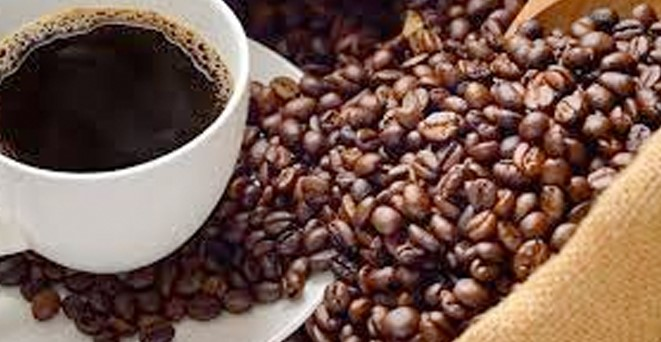
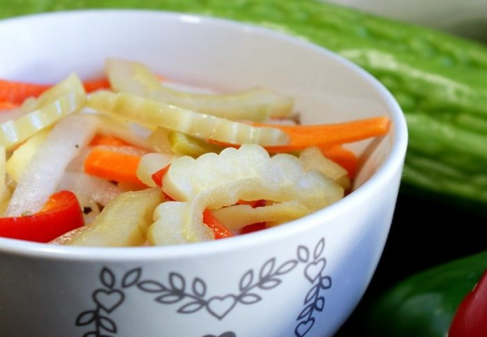

Best Foods in Batangas

Kapeng Barako
Kapeng Barako is a type of coffee grown in the Philippines, known for its strong and bold flavor.

Lomi
Batangas Lomi is a type of Filipino noodle soup dish originating from the Batangas province in the Philippines.

Atcharang
Atcharang Batangas is a Filipino dish that consists of pickled vegetables mixed with spices.

Balisong
A balisong, or butterfly knife, is a type of folding knife with rotating handles.

Panutsa
Panutsa is a traditional Filipino sweet made from sugar, glutinous rice, and peanuts.